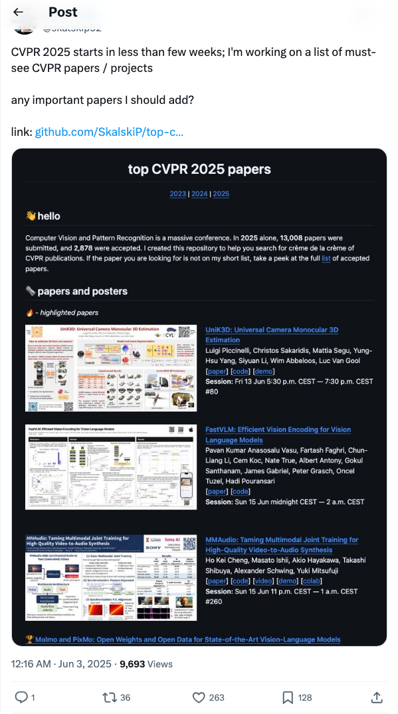

Twitter
jaseweston_自挑战语言模型智能体：仅用自生成数据训练LLM工具使用能力
Published: 2025-06-03T01:59:09.000Z

Jason Weston等人提出“自挑战语言模型智能体”（SCA）新范式，仅利用智能体自生成数据训练LLM工具使用能力。SCA通过自我生成任务、解决任务并利用自生成验证器获取强化学习奖励。该方法基于自合成工具使用轨迹进行训练，显著提升了基础LLM的工具使用能力，在TauBench和M3ToolEval上实现超2倍性能提升。
i_LangChain发布Gemini研究智能体全栈应用
Published: 2025-06-03T17:00:00.000Z

LangChain与Google Gemini合作，推出了一款生产级全栈应用——Gemini研究智能体。该应用利用Gemini模型和LangGraph框架，构建智能研究助手，能够通过迭代学习动态优化查询并提供带引用的答案。该项目提供完整的实现指南，旨在帮助开发者构建高效的AI研究工具。
i_Hugging Face发布SmolVLA：面向经济高效机器人的视觉-语言-动作模型
Published: 2025-06-03T14:00:12.000Z
Hugging Face宣布推出SmolVLA模型，这是一款专为经济高效机器人设计的视觉-语言-动作（VLA）模型。该模型旨在降低机器人开发的成本并提升其运行效率，有望推动机器人技术在更广泛领域的应用。SmolVLA的发布标志着多模态AI在具身智能领域取得新进展，为实现更智能、更普惠的机器人系统提供了新的解决方案。
i_Google I/O 2025发布Gemini、Gemma、Veo及AI搜索新进展
Published: 2025-06-03T03:00:02.000Z
在Google I/O 2025大会上，谷歌发布了多项AI重大更新。Gemini 2.5 Pro和Flash新增音频能力，并推出移动优化的Gemma 3n开源模型。Veo 3视频生成模型支持4K视频及对话音频。谷歌搜索将深度集成AI模式，实现查询内聊天和智能体功能。此外，还介绍了多智能体编程助手Jules和医疗AI模型MedGemma，全面展示了谷歌在AI领域的最新布局和技术突破。
i_Common Corpus：最大规模多语言LLM预训练伦理数据集发布
Published: 2025-06-03T04:04:52.000Z
Tanishq Mathew Abraham博士宣布Common Corpus已成为目前最大规模的开放数据集，专为大型语言模型（LLM）预训练设计。该数据集包含约2万亿个tokens，是同等规模中唯一支持多语言的版本，并强调其伦理数据特性，为LLM的开发提供了重要的、高质量的预训练资源。
i_Firecrawl推出API：智能体一键实现网页搜索与内容抓取，支持LLM就绪格式
Published: 2025-06-03T19:11:01.000Z
LiorOnAI宣布Firecrawl推出创新的“/search”API接口，使智能体能够通过单一API调用实现网页搜索与内容抓取。该接口能为每个搜索结果提供LLM（大型语言模型）就绪的完整内容，支持HTML、Markdown或JSON等多种格式输出。Firecrawl的此项服务可通过API直接调用，并已集成至Cursor的MCP、Zapier和n8n等平台，极大地简化了AI应用获取高质量网络数据的流程，提升了开发效率和数据处理能力。
量子位
推理“刹不住车”？新框架让DeepSeek-R1们告别过度思考，已开源
Published: 2025-06-03T06:22:27.000Z

针对DeepSeek-R1等大型推理模型在复杂任务中出现的“过度思考”问题，浙江大学、天津大学和MSRA研究团队提出Self-Braking Tuning（SBT）轻量级通用调优机制。SBT旨在让模型学会适时终止推理，避免冗余思考，从而提高效率并减少错误累积。该框架通过引入刹车信号、多任务微调等机制，使模型具备自我判断何时停止推理的能力，不依赖外部规则。在数学推理基准测试中，SBT展现出显著性能提升，例如Llama-3.1-8B-Instruct应用SBT-E后，生成token数量减少62.8%而准确率保持稳定。这表明SBT能有效剔除冗余推理内容，同时不损害模型解决复杂问题的能力，具有高度的稳定性和通用性，为提升大模型推理效率提供了新范式。
AI陪伴Top 1应用上线视频生成！图片人物能说话唱歌，多轮对话场景依然稳定
Published: 2025-06-03T06:22:27.000Z

Character.ai（c.ai）作为领先的AI陪伴应用，近期上线了AvatarFX视频生成功能，允许用户将静态图片中的人物动画化，实现说话、唱歌及互动，并支持多角色、长序列及多轮对话场景下的稳定生成。该功能基于DiT架构，已向所有用户开放。此外，c.ai还推出了Scenes、Imagine Animated Chat等新功能，旨在丰富用户互动体验和内容创作。文章同时披露了谷歌对c.ai的收购案及其引发的反垄断调查，指出谷歌通过“雇佣式收购”方式，在保持c.ai独立运营表象下，实际已将核心人员和技术团队并入谷歌，此举与微软、亚马逊对Inflection和Adept的类似操作一同受到监管机构关注。c.ai的新功能有望激发用户创作灵感。
斯坦福临床医疗AI横评，DeepSeek把谷歌OpenAI都秒了
Published: 2025-06-03T06:22:27.000Z

斯坦福大学最新发布了一项针对大模型在临床医疗任务中表现的全面评测，结果显示DeepSeek R1以66%的胜率位居榜首，超越谷歌和OpenAI等模型。这项名为MedHELM的评估框架由斯坦福大学医学院、微软等机构共同开发，并经过29名临床医生验证，涵盖22个医疗子类别和35个基准测试，旨在模拟真实临床工作场景。评测不仅对比了DeepSeek R1、o3-mini、Claude 3.7 Sonnet等9个前沿大模型的性能差异，还分析了其在不同任务类别中的表现及成本效益。研究发现，DeepSeek R1在综合性能上表现最佳，o3-mini紧随其后，而Claude系列则在性价比上表现良好。此外，该研究还创新性地采用了大语言模型评审团进行开放式任务评估，并证明其与临床医生评分具有更高的一致性，为医疗AI评估提供了新范式。
训练MoE足足提速70%！华为只用了3招
Published: 2025-06-03T06:22:27.000Z

华为针对MoE（混合专家）模型训练效率低下的痛点，提出了名为Adaptive Pipe & EDPB的综合优化方案。该方案旨在解决专家并行引入的计算通信等待和负载不均两大挑战。通过构建DeployMind仿真平台，华为能快速找到最优并行策略。Adaptive Pipe通信掩盖框架采用分层通信和细粒度调度，实现了高达98%的专家并行通信掩盖，有效分离计算与通信。EDPB全局负载均衡技术则通过专家预测动态迁移、数据重排Attention计算均衡以及虚拟流水线层间负载均衡三方面，解决了专家负载不均问题。实践证明，该方案使Pangu Ultra MoE 718B模型训练吞吐量提升了72.6%，为大模型训练优化提供了关键路径。
AI青年学霸齐聚杭州！这场峰会要选出「未来科学新星」
Published: 2025-06-03T06:22:27.000Z

2025全球人工智能技术大会（GAITC 2025）将于杭州召开，同期首届“清源学者”前沿交叉峰会备受瞩目。该峰会旨在遴选并展示15位在人工智能及其交叉领域取得原创性成果的青年学者，涵盖生物分子理解与设计、病毒变异预测、锂离子电池退化建模、心脏疾病诊断、大语言模型剪枝与推荐、光子计算、持续学习、可穿戴视觉辅助系统、感存算一体芯片、光电融合AI计算芯片及大小模型协同智能体框架等前沿方向。峰会旨在激发青年科技人才创新活力，打造高能级对话平台，助力其科研探索与成果转化，为未来人工智能发展注入新动能。
huggingface
WebChoreArena：评估网络浏览智能体在现实繁琐网络任务中的表现
Published: 2025-06-02T17:59:45.000Z

由大型语言模型（LLM）驱动的网络浏览智能体能够以类人方式操作网页浏览器，为自动化各种日常任务提供了高度透明的途径。随着网络智能体能力日益增强，并在通用浏览任务中展现出熟练度，一个关键问题浮现：它们能否超越通用浏览，稳健地处理那些繁琐、复杂的任务，即人类常避免亲自动手的“杂务”？本文介绍了WebChoreArena，这是一个全新的、完全可重现的基准测试，包含532个精心策划的任务，旨在将WebArena的范围从通用浏览扩展到更耗时、更繁琐的任务。WebChoreArena系统地整合了三大关键挑战：(i) 大规模记忆任务，要求在观察中准确检索大量信息；(ii) 计算任务，需要精确的数学推理；以及(iii) 长期记忆任务，要求跨多个网页的长期记忆能力。WebChoreArena建立在完全可重现且广泛采用的四个WebArena模拟环境之上，确保了严格的可重现性，并能与已建立的WebArena基准进行公平、直接的比较，从而为智能体进展提供关键洞察。我们的实验结果表明，随着以GPT-4o、Claude 3.7 Sonnet和Gemini 2.5 Pro为代表的LLM的演进，WebChoreArena上的性能显著提升。这些发现表明WebChoreArena非常适合更清晰地衡量最先进LLM的进步。然而，结果也表明，即使是Gemini 2.5 Pro，与WebArena相比仍有很大的改进空间，这凸显了WebChoreArena带来的更高挑战。
ARIA：基于意图驱动奖励聚合的语言智能体训练
Published: 2025-05-31T12:54:49.000Z

大型语言模型（LLMs）使得智能体能够通过自由形式的语言交互执行复杂的推理和决策。然而，在开放式语言动作环境（例如，谈判或问答游戏）中，动作空间可以被描述为令牌的联合分布，从而导致指数级增长的动作空间。在此类空间中采样动作可能导致极端的奖励稀疏性，这会带来大的奖励方差，从而阻碍有效的强化学习（RL）。为了解决这个问题，我们提出了 ARIA，一种在意图空间中聚合奖励的方法，以实现高效且有效的语言智能体训练。ARIA 旨在将自然语言动作从高维联合令牌分布空间映射到低维意图空间，在该空间中，语义相似的动作被聚类并分配共享奖励。这种意图感知的奖励聚合通过密集化奖励信号来减少奖励方差，从而促进更好的策略优化。大量的实验表明，ARIA 不仅显著降低了策略梯度方差，而且在四个下游任务中平均带来了 9.95% 的显著性能提升，持续优于离线和在线强化学习基线。
LoHoVLA：一种用于长周期具身任务的统一视觉-语言-动作模型
Published: 2025-05-31T06:01:03.000Z

现实世界的具身智能体面临长周期任务，其特点是高级目标需要多步骤解决方案而非单一动作。成功完成这些任务既需要高级任务规划（即将目标分解为子任务），也需要低级运动控制（即生成精确的机器人动作）。尽管现有的视觉-语言-动作（VLA）模型和分层架构在具身任务中展现出潜力，但前者在规划方面常有不足，后者则可能存在协调问题，两者都阻碍了性能提升。我们引入了一种新的、用于长周期任务的统一VLA框架，命名为LoHoVLA，以克服这些局限性。LoHoVLA利用大型预训练视觉-语言模型（VLM）作为骨干，联合生成语言和动作标记，分别用于子任务生成和机器人动作预测。这种共享表示促进了跨任务的更好泛化能力。此外，LoHoVLA采用分层闭环控制机制，以减轻源自高级规划和低级控制的误差。为了训练LoHoVLA，我们引入了LoHoSet数据集，该数据集基于Ravens模拟器构建，包含20个长周期任务，每个任务包含1,000个专家演示，由视觉观察、语言目标、子任务和机器人动作组成。实验结果表明，LoHoVLA在Ravens模拟器中的长周期具身任务上显著优于分层和标准VLA方法。这些发现强调了统一架构在推进可泛化具身智能方面的潜力。
达尔文哥德尔机器：自改进智能体的开放式演化
Published: 2025-05-29T00:26:15.000Z

当今的AI系统具有人类设计的固定架构，无法自主持续地改进自身。AI的进步本身可以被自动化。如果安全地实现，这将加速AI发展，并使我们更快地获得其益处。元学习可以自动化新算法的发现，但受限于一阶改进和人类设计的合适搜索空间。哥德尔机器提出了一种理论上的替代方案：一种可证明地以有益方式反复修改自身的自改进AI。不幸的是，在实践中证明大多数改变是净收益几乎是不可能的。我们引入了达尔文哥德尔机器（DGM），一个自改进系统，它迭代地修改自身代码（从而也提高了修改自身代码库的能力），并使用编码基准经验性地验证每次更改。受达尔文进化论和开放式研究的启发，DGM维护了一个生成的编码智能体档案。它通过从档案中提取一个智能体，并使用基础模型创建该智能体的一个新的、有趣的变体来扩展档案。这种开放式探索形成了一个不断增长的、多样化的、高质量智能体的树状结构，并允许并行探索搜索空间中的许多不同路径。经验上，DGM自动提高了其编码能力（例如，更好的代码编辑工具、长上下文窗口管理、同行评审机制），将SWE-bench上的性能从20.0%提高到50.0%，将Polyglot上的性能从14.2%提高到30.7%。此外，DGM显著优于没有自改进或开放式探索的基线。所有实验均采取了安全预防措施（例如，沙盒、人工监督）。DGM是迈向自改进AI的重要一步，它能够沿着通向无限创新的路径，自行收集垫脚石。
MaskSearch：一种增强智能体搜索能力的通用预训练框架
Published: 2025-05-26T17:58:50.000Z

检索增强语言模型（RALMs）代表了一种经典范式，其中模型通过专门模块检索外部知识来增强生成能力。智能体技术的最新进展使得大型语言模型（LLMs）能够自主利用工具进行检索、规划和推理。尽管现有的基于训练的方法展现出潜力，但其智能体能力受限于训练过程中使用的任务特定数据的固有特性。为了进一步增强智能体的通用搜索能力，我们提出了一种新颖的预训练框架——MaskSearch。在预训练阶段，我们引入了检索增强掩码预测（RAMP）任务，模型在此任务中学习利用搜索工具填充大量预训练数据中的掩码片段，从而使LLMs获得通用的检索和推理能力。之后，模型在下游任务上进行训练以实现进一步的提升。我们采用监督微调（SFT）和强化学习（RL）进行训练。对于SFT，我们结合了基于智能体和基于蒸馏的方法来生成训练数据，首先是一个由规划器、重写器、观察者组成的多智能体系统，随后是一个自进化的教师模型。而对于RL，我们采用DAPO作为训练框架，并采用由答案奖励和格式奖励组成的混合奖励系统。此外，我们引入了一种课程学习方法，允许模型根据掩码片段的数量，逐步从简单到更具挑战性的实例中学习。我们在开放域多跳问答场景中评估了我们框架的有效性。通过大量实验，我们证明MaskSearch显著提升了基于LLM的搜索智能体在域内和域外下游任务上的性能。
SealQA：提升检索增强语言模型推理能力的基准
Published: 2025-06-01T16:04:34.000Z

我们引入了SealQA，这是一个新的挑战性基准，用于评估检索增强语言模型在事实查询问题上的表现，这些问题通过网络搜索会产生冲突、噪声或无用的结果。SealQA有三种类型：(1) Seal-0（主要）和(2) Seal-Hard，它们评估事实准确性和推理能力，其中Seal-0侧重于聊天模型（如GPT-4.1）通常准确率接近零的最具挑战性的问题；以及(3) LongSeal，它将SealQA扩展到测试“大海捞针”设置中的长上下文、多文档推理。我们的评估揭示了当前模型的关键局限性：即使是前沿大型语言模型在所有SealQA类型上表现都差强人意。在Seal-0上，配备了o3和o4-mini等工具的前沿智能体模型在最佳推理努力下，准确率分别仅达到17.1%和6.3%。我们发现，DeepSeek-R1-671B和o3-mini等高级推理模型极易受到噪声搜索结果的影响。值得注意的是，增加测试时计算量并未在o3-mini、o4-mini和o3上带来可靠的性能提升，性能往往很早就趋于平稳甚至下降。此外，尽管最近的模型受“中间遗失”问题的影响较小，但在LongSeal中面对大量干扰项时，它们仍然无法可靠地识别相关文档。为了促进未来的工作，我们在huggingface.co/datasets/vtllms/sealqa发布了SealQA。